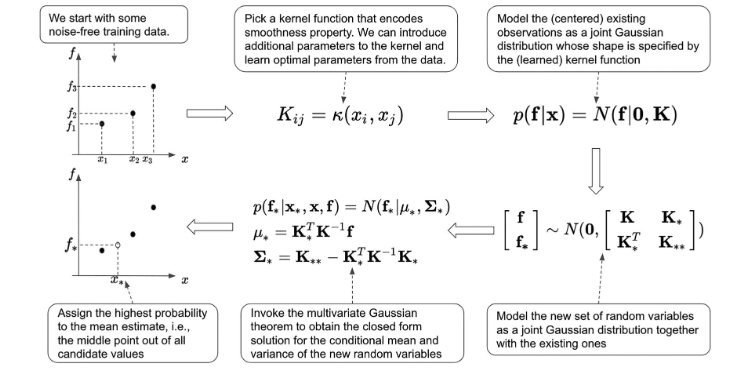

Kernel Function 核函数
目录
这篇文章主要解决三个问题：
- 正态分布的表示
- 核函数是什么，有什么类型
- 已知先验知识，如何计算后验分布
1. 正态分布的表示
正态分布一般表示为$f \sim N(0,K)$，书上写作 $p(f|x) = N(f|0,K)$。
为啥要多写一个f呢？
因为这个分布是针对f的分布，换句话说这里的随机变量是f，再换句话就是说这个随机变量f遵守一个正态分布。
2. 核函数是什么，有什么类型
核函数就是协方差。
核函数$K(x_i, x_j)$
- 它计算在输入空间中任意两个点的相似度，可以用欧式距离表示。
- 它度量输入空间中两点$x_i$和$x_j$之间的统计关系。
- 它量化$x_j$的变化和$x_i$的相应变化之间的相关性。
选择不同核函数，表示数据点之间的相关性被用不同方式来衡量。
有几种常见的核：
- 高斯核 Gaussian kernel
1.1 常见的高斯核
$$ K_{ij} = k(x_i,x_j) = e^{-||X_i-X_j||^2}$$
这里把负平方距离的指数作为距离度量。当x_i和x_j距离非常远，我们有x_i-x_j 趋向于无穷大，此时k_{ij}趋向于0。当x_i和x_j相等，k_{ij}等于1。K是一个介于0和1之间的数，由此就可以表现点之间的相关性。
1.2 可调节参数的高斯核，又被叫做isotropic squared exponential kernel
$$K_{ij} = k(x_i,x_j) = \sigma_f^2e^{-\frac{1}{2l^2}||X_i-X_j||^2}$$ 2. 略(以后补充，暂时不是重点)
3. 已知先验知识，如何计算后验分布
假设我们有三个无噪声观测值，$ D = {(x_1,f(x_1)), (x_2, f(x_2)),(x_3, f(x_3))}$。我们需要对这三个随机变量进行建模。假设mean vector 为 $\mu$， covariance matrix为$K$。
这三个变量遵循多元变量的高斯分布
基于这个数据集D，假设我们现在想知道另一个变量$x_4$（它对应的f值用$f_*(x_4)$表示）在其他位置的均值和方差的的分布。
问题：f 和f* 是同一个分布吗？ 不是，用不同的字母表示不同的分布。
f和f*的分布为
已知先验知识：$p(f_*(x_4)|x_4) = N(f_*(x_4)|0, k(x_4,x_4))$ 和 $p(f|x) = N(f|0,K)$，求后验概率$p(f_*(x_4)|x_4,x,f)$。
如何求这个后验概率呢？
我们可以将观察到的数据集与新变量一起构造一个联合分布。
我们已经知道，数据集D最的观测值f和f(x_4)分别遵循分布
假设四个数据的建模为随机变量$f_{new}$
并且有
就有
根据多元变量的高斯分布，
这样就求出$f_*(x_4)$的分布了。

如果观测样本是有噪声的，那么可以用$y = f + \epsilon$，即观测值 $y$ 可以被看作是真实值 $f$ 加上随机误差 $\epsilon$ 。
计算的步骤也是一样，计算公式为
$$ p(f_*(x_4)|x_4,x,f) = N(f_*(x_4)|\mu_4, \Sigma_4)$$
$$ \mu_4 = K_4^TK_y^{-1}f$$
$$ \Sigma_4 = K_{44} - K_4^TK_y^{-1}K_{4}$$
$$ K_y = K + \sigma_y^2I$$